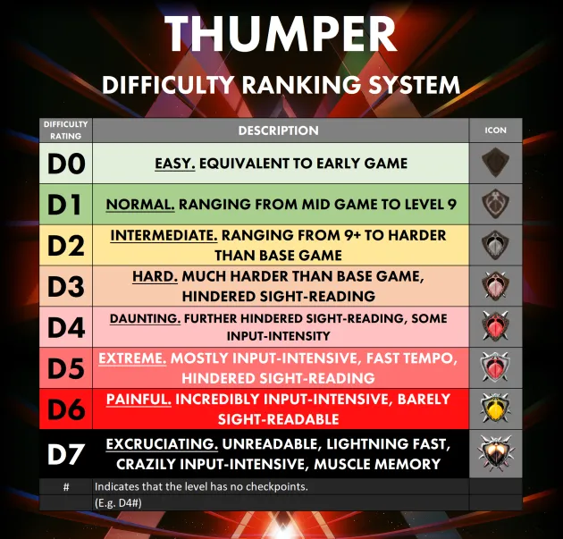

Additional Resources and Links
- Official Website
- Official Thumper Manual
- Thumper Discord Invite Link
- THUMPER Manual 2.0
- Subreddit
- RainbowUnicorn's sample level
- Thumper Frame Dissection
- Cross Platform Leaderboard
- Steam Leaderboards
- Thumper - How To Climb The Leaderboards
- thump_rails.objlib OFFSETS
- NinjaRipper
- Noesis
- Noesis compatibility script
- Thumper Modding Information
- Image Assets
- How to use Custom Audio
- Thumper Custom Level Editor Guide
- nwolc's Every Released TCL
- Old ThumpNet Spreadsheet
- ThumpNet Legacy Webcode
- ThumpNetNext / BeetleBot Usage
- Thumper Hash Parameters
- Thumper Crash Scoring
- Thumper Informational Video Archive
- Leaf Format
- Thumper Tentacles, Tunnels, FX & Skybox Colors
- Thumper editor values and things
- Thumper Custom Level Highscores
Samples and SFX
Sample Sources
Boomlibrary cinematic motion designed
- ch-ds hit distorted 03
- ch-ds hit distorted 04
- CH-DS HIT Massive 01
- CH-DS HIT Massive 04
- ch-ds hit scifi 01
Eastwest Stormdrum 3
- Various
Level BPMs and Time Signatures
- Level 1 - 320 BPM (1/4)
- Level 2 - 340 BPM (2/4)
- Level 3 - 360 BPM (3/4)
- Level 4 - 380 BPM (4/4)
- Level 5 - 400 BPM (5/8)
- Level 6 - 420 BPM (6/8)
- Level 7 - 440 BPM (7/8)
- Level 8 - 460 BPM (8/8)
- Level 9 - 480 BPM (9/8)
- Level 10 - 270-550~[^factcheck] BPM
Difficulty Ranking

Contributors
- Modding Tools by CocoaMix
- https://thumper.tiddlyhost.com/ by RainbowUnicorn
- Thumper Wiki by AnthoFoxo
Footnotes
[^factcheck]: Needs factchecked